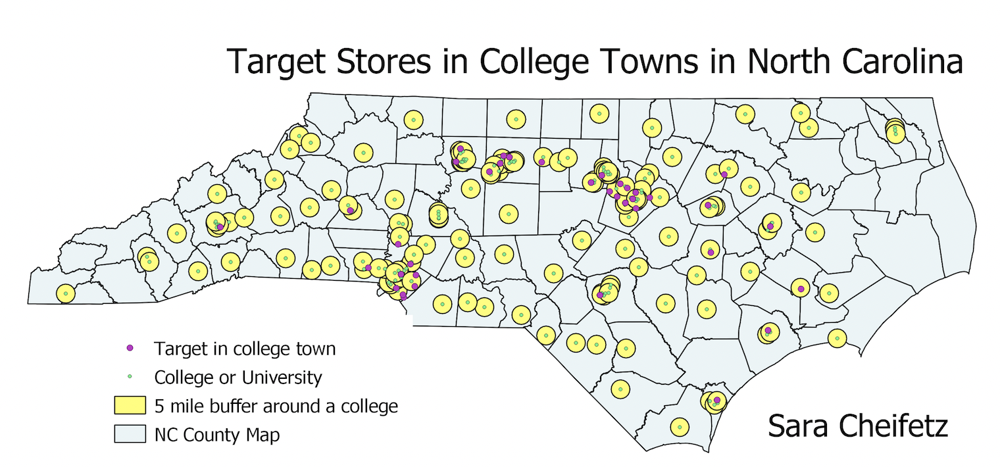

Homework 8 - Sara Cheifetz
Question: How many Target stores are in North Carolina's college towns?

For this assignment, my question asked how many Target stores were in college towns in North Carolina? Many students go to Target to buy various school supplies or other items. In Chapel Hill, there is one on Franklin Street, which is within walking distance from campus and many UNC students shop there. To start my assignment, I found a shapefile for every college and university in the United States and a shapefile for every Target store location and opened both into QGIS. I then exported the files to reproject them into a North Carolina projection. I narrowed down the data to only include colleges or stores that were in North Carolina by removing ones in all other states from the attribute table. I decided the area of a "college town" was anywhere within a 5 mile radius of a college. I created a buffer, represented by the yellow polygons on the map, that is included the area within 5 miles of each college, which is represented by the green circles. Next, I used the intersect tool with the Target stores layer and the buffer polygons layer to find all stores that fell within this 5 mile radius of a college. I added the gray county map of North Carolina in the background to better show where these vectors are located in the state. Overall, I found that there are 120 Targets within 5 miles of a college in North Carolina.
Links to data used:
Target stores shapefile (exported in 2246)
Colleges and Universities shapefile (exported in 2246)
College towns buffer shapefile
Points that intersect shapefile
NC counties shapefile